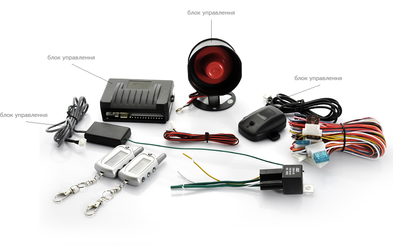

О системе AvtoBlackBox
Что такое AvtoBlackBox?
1
Электронный элемент (модуль) пассивной безопасности Вашего автомобиля, который в случае ДТП или по команде водителя мгновенно обратит внимание диспетчера на ваш автомобиль. Система самостоятельно передаст данные о произошедшем событии в единый центр обеспечения безопасности и помощи на дороге».
2
Одна из наиболее «продвинутых» систем «электронного мозга» Вашего автомобиля, применяемая на территории РФ, объединяющая инновационную автомобильную GSM сигнализацию (с функциями смарт-ключа, которым может служить ваш сотовый телефон), возможностью управления автомобилем с брелока, телефона (специальное приложение), компьютера)и систему самостоятельной автомобильной диагностики.
3
Навигатор, видеорегистратор, Skype, мультимедиа система с тысячами музыкальных и видео файлов – реализованных с помощью полноценного планшетного компьютера на системе Android.
4
Круглосуточная диспетчерская онлайн-поддержка на дороге. Сломался автомобиль…, заблудились или хотите совет — Мы рядом!
5

Навигатор, видеорегистратор, Skype, мультимедиа система с тысячами музыкальных и видео файлов, реализованных с помощью полноценного планшетного компьютера на системе Android.
Почему необходим AvtoBlackBox?
Использованиеподобной системы аналогично использованию ремня безопасности и подушки безопасности на автомобиле. Это, прежде всего, ваша безопасность и безопасность ваших близких. И хотя в соответствии с проектом Федерального закона «О Государственной автоматизированной информационной системе «ЭРА-ГЛОНАСС» использование аналогичных систем в РФ станет обязательным лишь с 2020года, AvtoBlackBoxуже сейчас просто необходим для большинства водителей, а особеннотем, кто хоть иногда покидает пределы города. Мгновенное реагирование на ситуацию на дороге,
а также круглосуточная поддержка диспетчерского центра позволит вам чувствовать себя в полной безопасности и понимать, что даже если случилась беда — помощь придёт незамедлительно.AvtoBlackBox — это ещё и совершенно новая автомобильная GSM сигнализация, применяющая запатентованные элементы охраны. Добавьте сюда автоматическую диагностику бортовых систем с выводом ошибок на русском языке, навигатор, видеорегистратор, Skype, полноценный планшетный компьютер,низкую стоимость и вы поймёте, что AvtoBlackBox — неотъемлемый элемент вашего автомобиля».